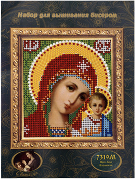
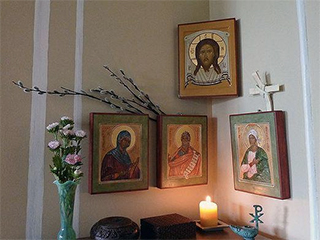
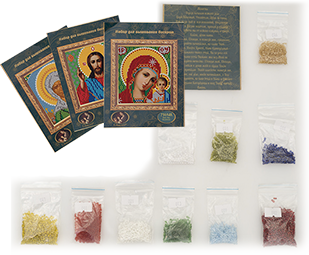

Вышить икону Казанской Божьей матери бисером с нашим набором
смогут даже те, кто впервые решил заняться рукоделием!
Вышивка иконы – отличный
вариант вашего досуга:
- Снимает стресс и напряжение
- Улучшает память и моторику рук
- Позволяет создать уникальный шедевр себе или в подарок

Цена завтра 2490 руб
Цена сейчас 1299 руб
Оставить заявку

Вышивайте с комфортом!
Вы можете вставить полотно в рамку, использовать пяльцы, либо вышивать без них.
Цветное изображение прямо на канве не требует использования отдельной бумажной схемы – Вы просто подбираете бисер нужного цвета и вышиваете.
Водостойкие краски не линяют и не размазываются – а значит, рисунок всегда яркий и четкий, даже после нескольких стирок вручную.
Черные точки на канве обозначают места для проколов, что позволяет делать стежки идеально ровными и аккуратными. Бисер ложится в соответствии с рисунком.
Перед началом работы вы можете пойти в церковь, чтобы получить благословение священника. А по окончании вышивки освятить икону, придав ей чудодейственной силы. В Ваш дом придет гармония и покой. Вашей семье и близким будет сопутствовать удача.
С нашим набором у вас все получится с первого раза!
Вы вышьете настоящее произведение искусства,
даже если впервые беретесь за иглу и бисер.

В наборе есть все необходимое:
- Плотная канва, которая отлично сохраняет форму.
- Качественный чешский бисер насыщенных оттенков, соответствующих изображению на полотне.
- Специальная бисерная игла, позволяющая легко вышивать.
- Инструкция, с помощью которой вы быстро разберетесь, как начать работу.
- Молитва. Читая ее до и после вышивки, вы придадите иконе чудодейственную силу.
Символ веры
в Вашем доме
- Защитит от злых людей, укажет верный путь в благих целях, убережет от бед.
- Принесет удачу, поможет в решении проблем, сохранит гармонию и избавит от ссор.
- Станет оберегом для Вашей семьи или в доме близкого человека, которому подарите.
Что говорят священники и искусствоведы
Протоиерей Александр Салтыков, настоятель храма Воскресения Христова в Кадашах, декан факультета Церковных художеств ПСТГ:
«Ничего плохого нет в том, что рукодельница вышивает икону без дурных помыслов. Однако, считаю, что она должна получить благословение в церкви. Возможно, эта вышивка поспособствует ее духовному развитию. Она захочет больше узнать о церковном искусстве, об изображенном образе, захочет погрузиться в духовную жизнь».
Ирина Языкова, кандидат искусствоведения:
«Сегодня церковное искусство стало массовым хобби. Купить набор и вышить полотно может любая мастерица, которая умеет хоть как-то держать в руках иглу. Такой шедевр может стать домашним оберегом для семьи. Не обязательно даже нести в церковь и освещать. А вот делать это для того, чтобы показать свою духовность уже не во славу Божию, а во славу человеческую».
Закажите набор для вышивки бисером «Пресвятая богородица Казанская», насладитесь процессом, реализуйте творческий потенциал. Порадуйте себя и близких!
Отзывы
наших покупателей
Набор
для вышивания иконы